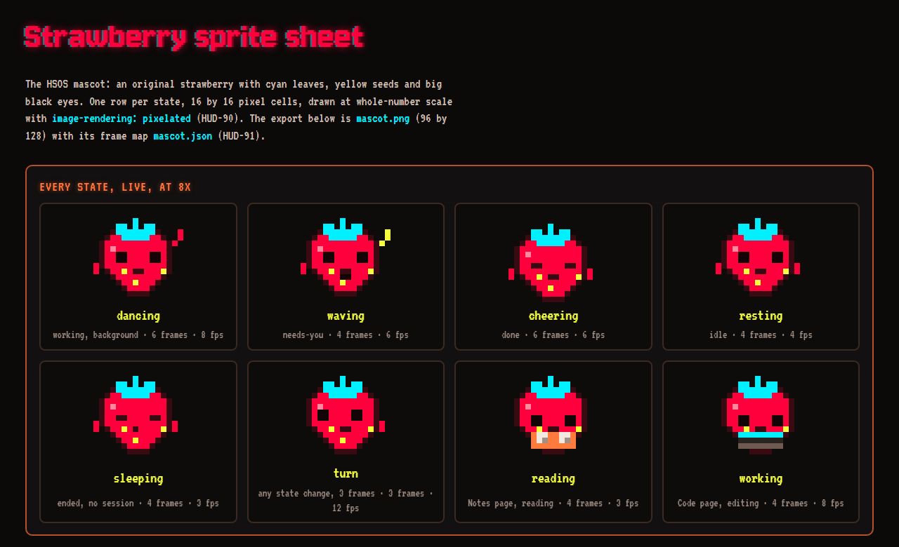
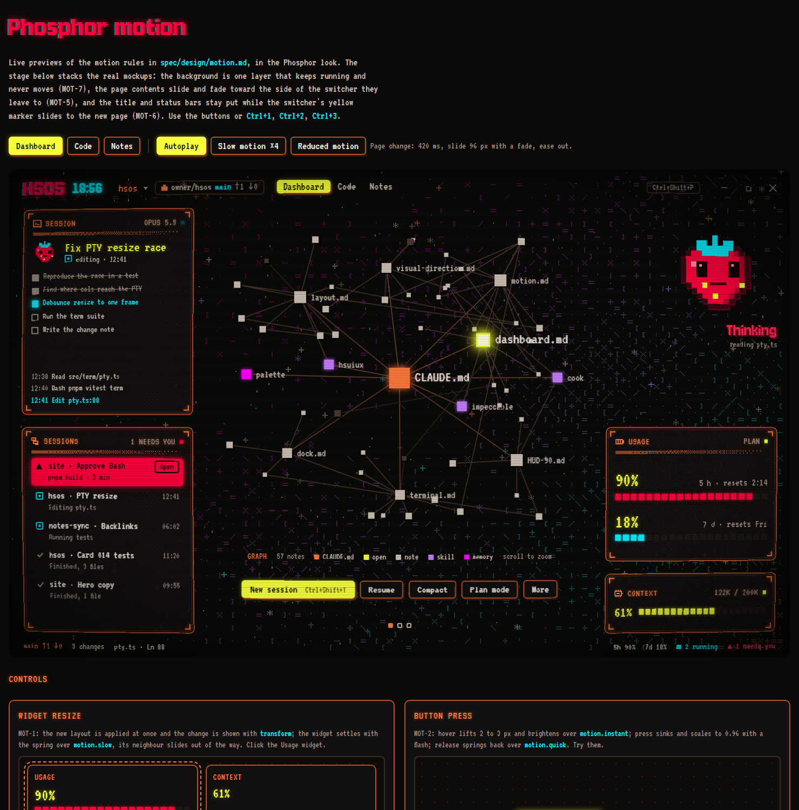

Phosphor
The chosen look for HSOS: CRT pixel art over a field of dust and steam, one colour per job, a breathing HSOS and cyan clock, corner boxes, a floating graph, a strawberry mascot, and buttons that lift in 3D. Every item the design brief asks for is here, ready for the spec author. Click any card to open it live.
Pages approved
 Notes page
Notes pageDialog and panel states
Mascot, motion, theme

Strawberry sprite sheetEight states in 16 by 16 cells, at 2x, 4x and live; mascot.png and mascot.json.
MotionPage changes, widget resize, button press, menu, dialog. Slow motion and reduced motion switches. Theme file and glass mapphosphor.json with every token, 18 new tokens, the glass map and open points. Dashboard rounds
Dashboard rounds Notes page layouts
Notes page layouts